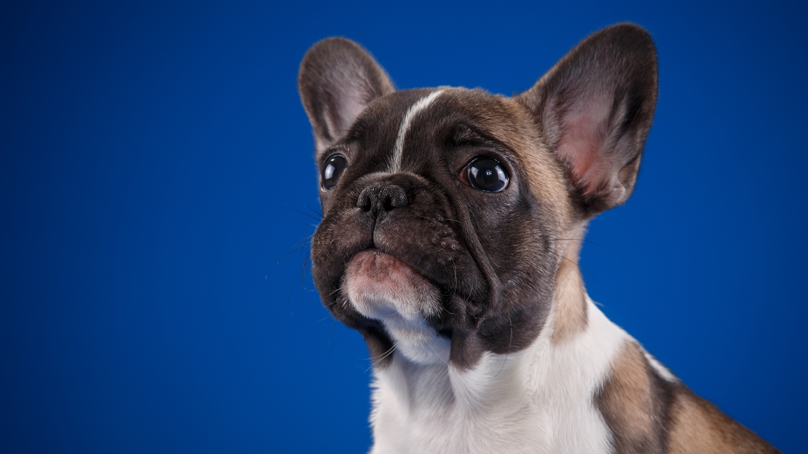
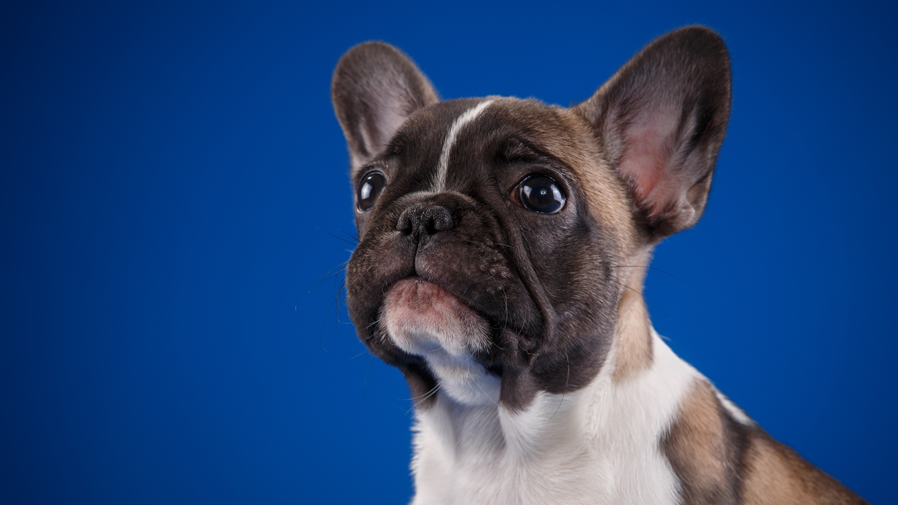

Veterinaria king of pets
Veterinaria dedicada al cuidado y bienestar de los animales de todas las razas con mas tres profesionales en turnos rotativos para una mejor atencion y con servico de peluqueria a domicilio y telfono de urgencia.
.jpg) 

A pesar de que tener alimento para mascota es un servicio básico y que muchas veterinarios pueden tenerla también. Es importante que tengas alimento para todo tipo de animal y edad. Recuerda que de eso varía la proporción y tipo de comida.
- Alimento para mascotas
- Cachorros (perros y gatos)
- Adultos.
- Comida de dieta.
- Comida especial.
- Las vacunas no pueden faltar
- Juguetes para las mascotas
- Collares, correas y placas de identificación
- Productos de higiene
- Champú y jabón anti-pulgas.
- Cepillos.
- Esponjas.
- Corta uñas.
- Servicio de baño
- Peluquería y spa para las mascotas
- Camas y tapetes
- Guardería para perros
Los juguetes para los animales además de ser una manera de distraerlos y hacer que pasen un buen momento, también será de gran ayuda para que el cachorro estimule su agilidad y fortalecer su salud dental. Lo mejor de tener juguetes en tu clínica veterinaria es que podrás aconsejar a los dueños y hacer que compren el más adecuado para su mascota. Recuérdales que es importante pensar en el bienestar del cachorro para que su crecimiento sea el mejor
A pesar de que tener alimento para mascota es un servicio básico y que muchas veterinarios pueden tenerla también. Es importante que tengas alimento para todo tipo de animal y edad. Recuerda que de eso varía la proporción y tipo de comida.